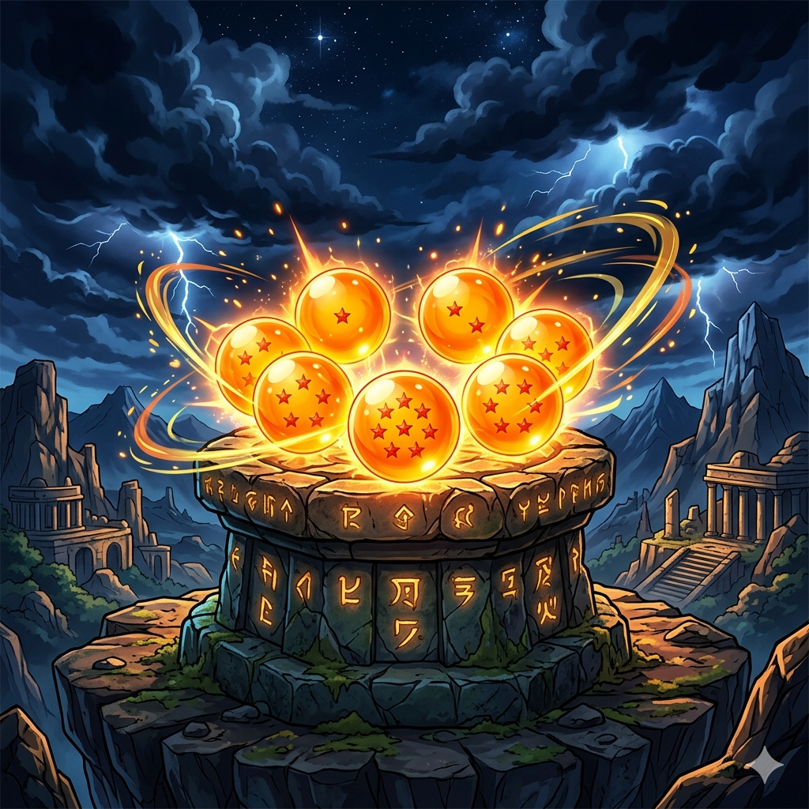
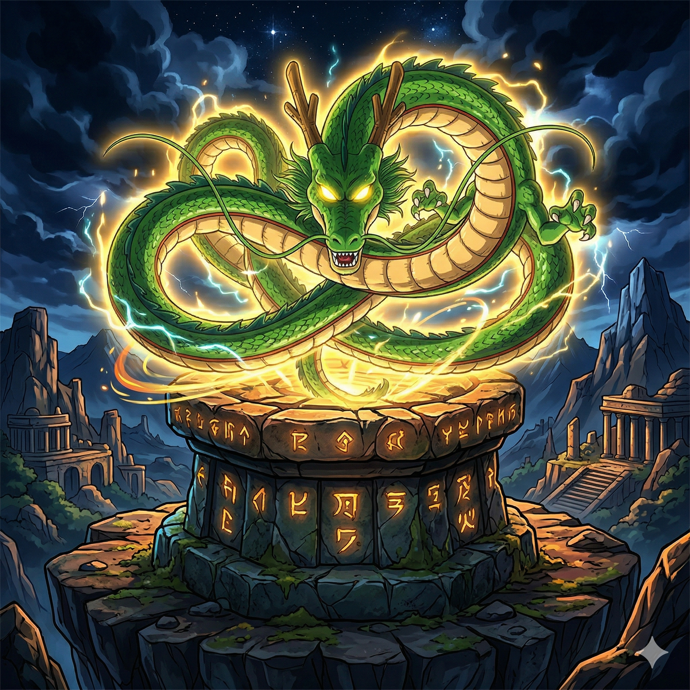
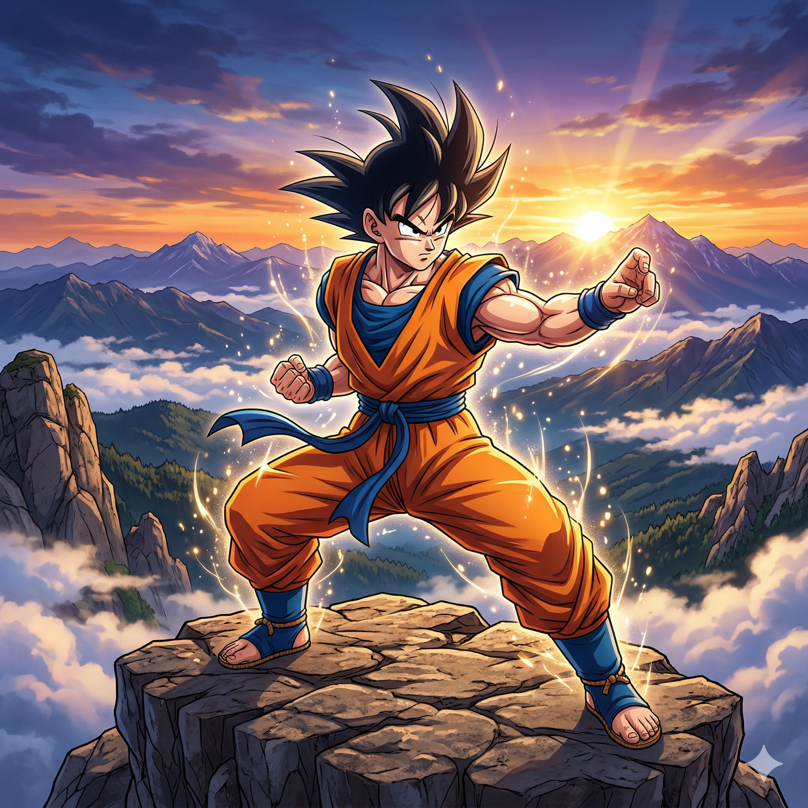
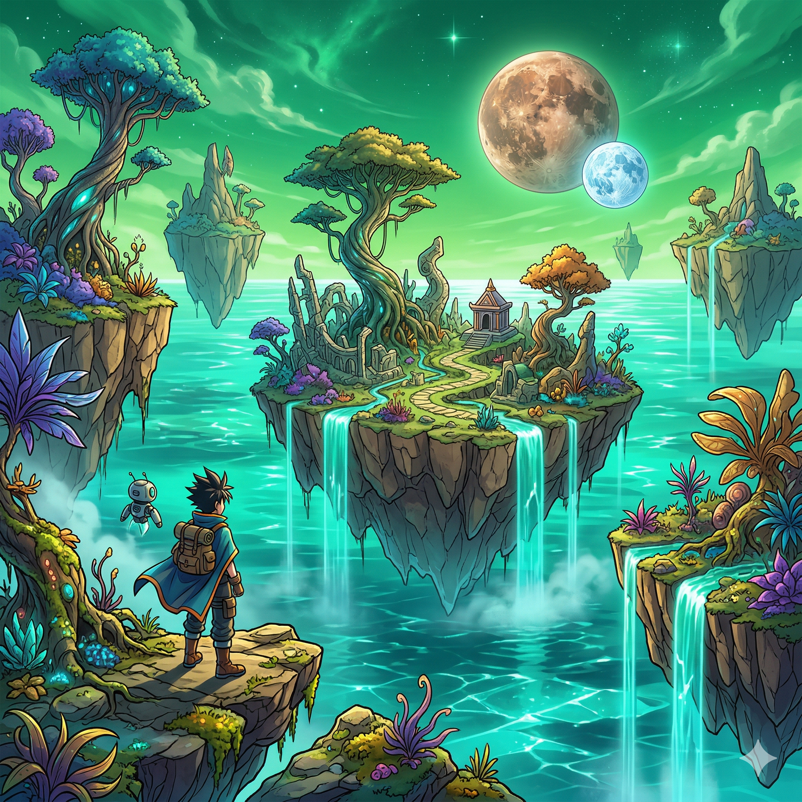
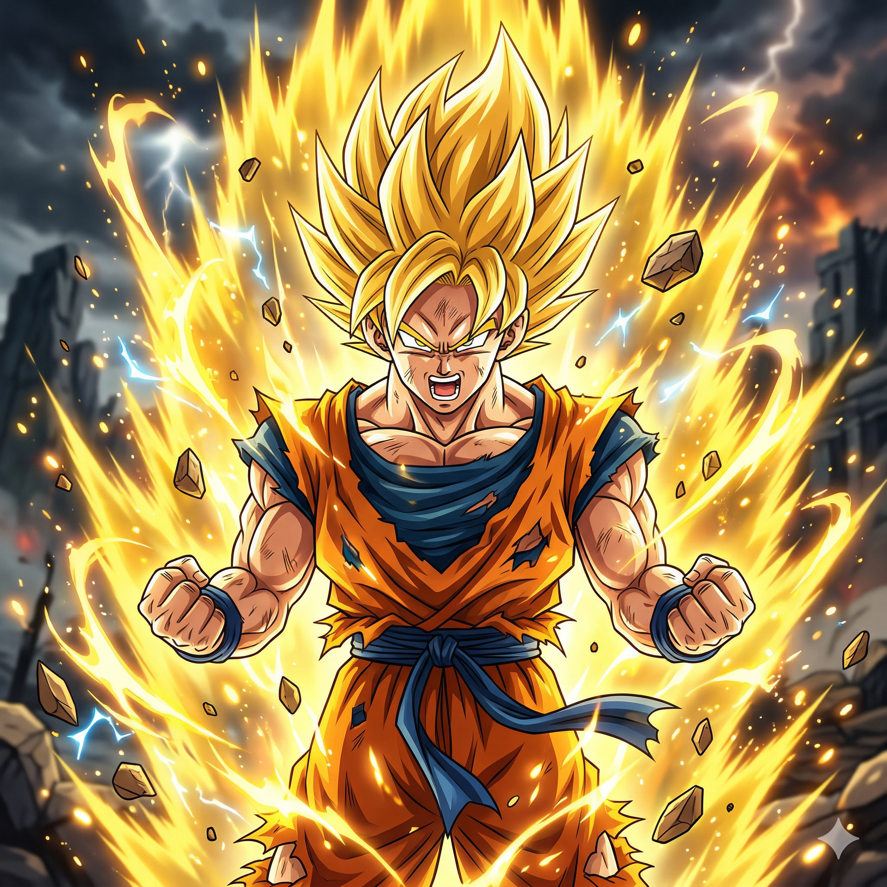
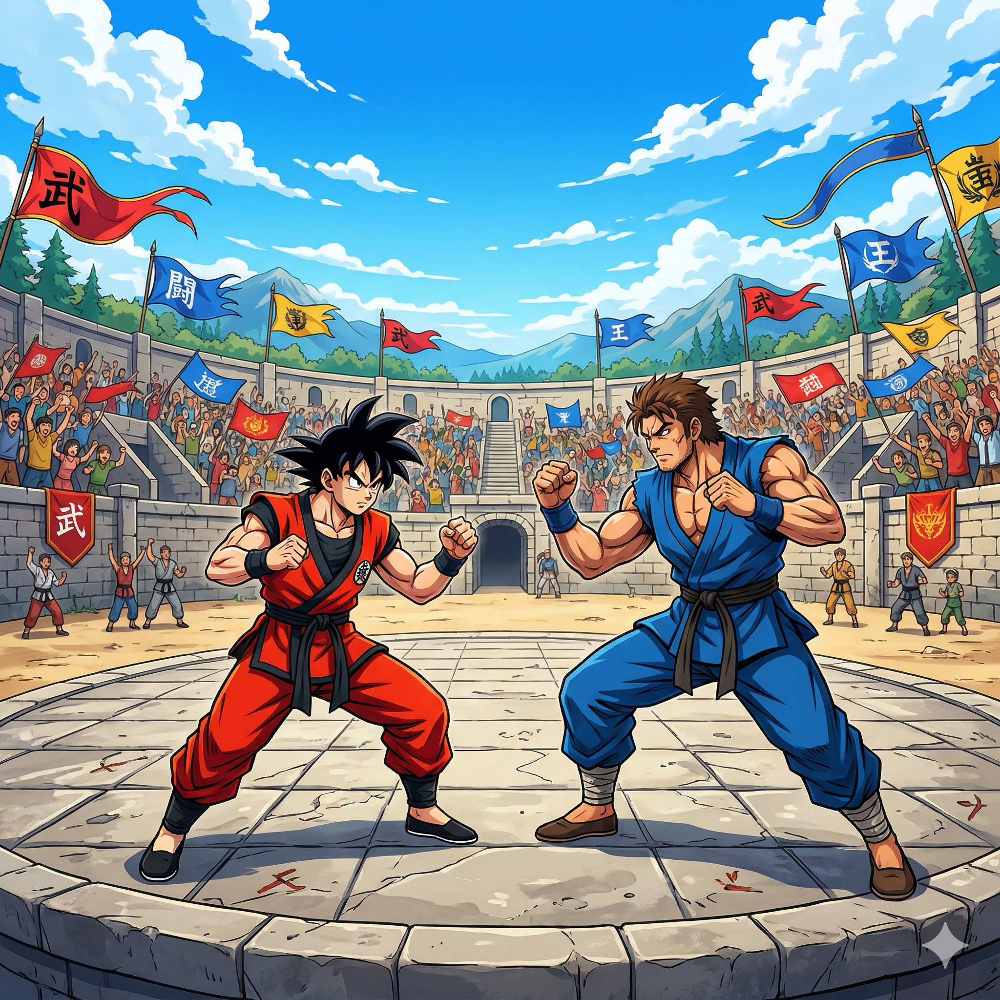
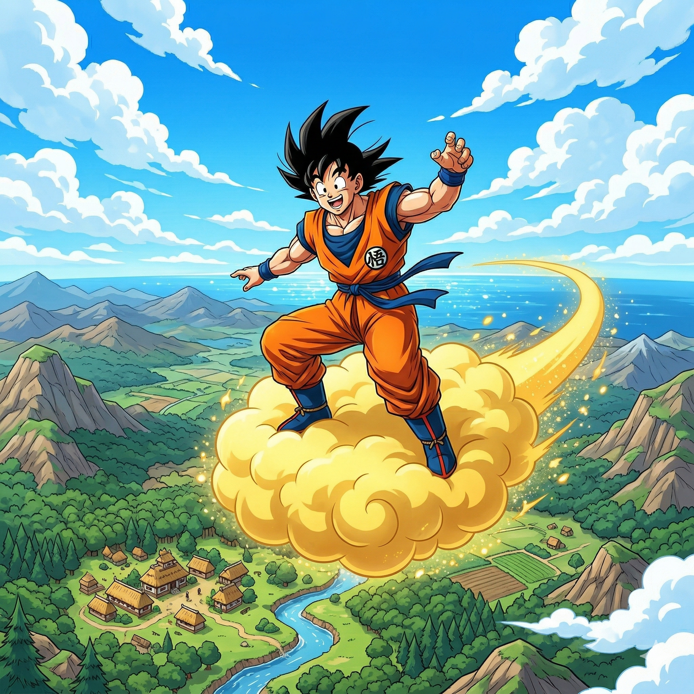
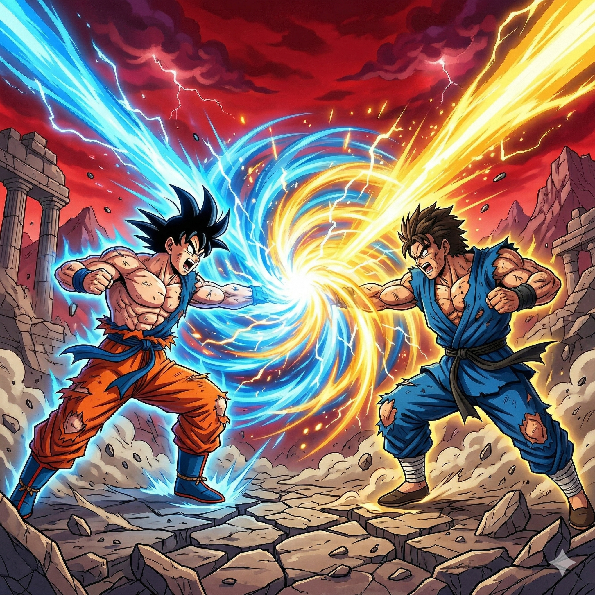
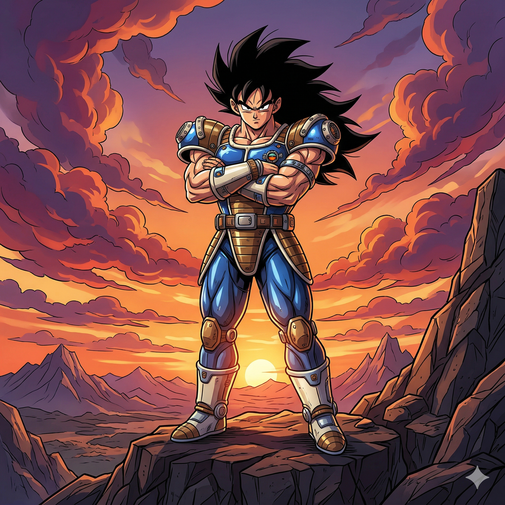

Bienvenido a una galería visual inspirada en el universo de Dragon Ball, donde la aventura, la energía y el espíritu de superación se combinan en escenarios llenos de intensidad, entrenamiento, combates legendarios y mundos extraordinarios. Imágenes generadas por Nano Banana.
Este sitio fue desarrollado con diseño responsive para adaptarse de forma eficiente a dispositivos móviles, tabletas y pantallas grandes. Además, respeta las preferencias de la actividad relacionadas con la reducción de movimiento y el modo oscuro, ofreciendo una experiencia visual más accesible y cómoda.








